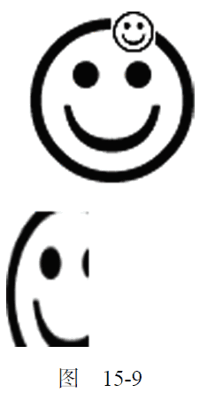

15.2.6 绘制图像
2D 绘图上下文内置了对图像的支持。如果你想把一幅图像绘制到画布上，可以使用drawImage()方法。根据期望的最终结果不同，调用这个方法时，可以使用三种不同的参数组合。最简单的调用方式是传入一个HTML <img>元素，以及绘制该图像的起点的x 和y 坐标。例如：
var image = document.images[0];
context.drawImage(image, 10, 10);
运行一下
这两行代码取得了文档中的第一幅图像，然后将它绘制到上下文中，起点为(10,10)。绘制到画布上的图像大小与原始大小一样。如果你想改变绘制后图像的大小，可以再多传入两个参数，分别表示目标宽度和目标高度。通过这种方式来缩放图像并不影响上下文的变换矩阵。例如：
context.drawImage(image, 50, 10, 20, 30);
运行一下
执行代码后，绘制出来的图像大小会变成20×30 像素。
除了上述两种方式，还可以选择把图像中的某个区域绘制到上下文中。drawImage()方法的这种调用方式总共需要传入9 个参数：要绘制的图像、源图像的x 坐标、源图像的y 坐标、源图像的宽度、源图像的高度、目标图像的x 坐标、目标图像的y 坐标、目标图像的宽度、目标图像的高度。这样调用drawImage()方法可以获得最多的控制。例如：
context.drawImage(image, 0, 10, 50, 50, 0, 100, 40, 60);
运行一下
这行代码只会把原始图像的一部分绘制到画布上。原始图像的这一部分的起点为(0,10)，宽和高都是50 像素。最终绘制到上下文中的图像的起点是(0,100)，而大小变成了40×60 像素。这种调用方式可以创造出很有意思的效果，如图15-9 所示。

除了给drawImage()方法传入HTML <img>元素外，还可以传入另一个<canvas>元素作为其第一个参数。这样，就可以把另一个画布内容绘制到当前画布上。
结合使用drawImage()和其他方法，可以对图像进行各种基本操作。而操作的结果可以通过toDataURL()方法获得①。不过，有一个例外，即图像不能来自其他域。如果图像来自其他域，调用toDataURL()会抛出一个错误。打个比方，假如位于www.example.com 上的页面绘制的图像来自于www.wrox.com，那当前上下文就会被认为“不干净”，因而会抛出错误。